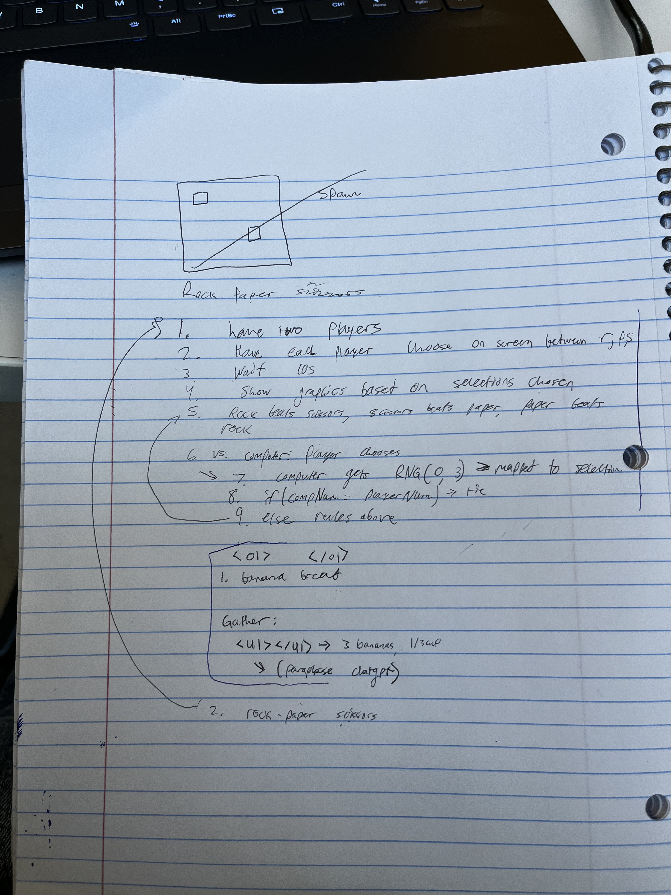

Lab 4 - Pseudocoding and Problem-solving
Challenge
The challenge is to:
-
Write pseudocode for an everyday task.
-
Write pseudocode for a simple computer game.
-
Introduce ourselves to Javascript comments by inserting pseudocode into this lab's lab.js file.
-
Include our pseudocode as lists in our lab 4 index.html file.
Problems
We had a bit of trouble using ChatGPT to give us pseudocode for banana bread.
-
We remedied this by indicating "pseudocode without code".
Reflection
- I met my partner in section on Thursday, 4-20.
- We decided we would do Rock, Paper, Scissors for the section activity.
- We then decided to keep this game for our pseudocode.
- I wrote out pseudocode for it, and checked it against the pseudocode written by ChatGPT.
- We also wrote pseudocode for the everyday task, but that mostly consisted of choosing a food and plugging that into ChatGPT for a recipe.
- We then adapted that recipe into steps and substeps.
I attempted to make effective use of nested lists for this assignment to separate tasks and subtasks, as well as color-code them. Even in the recipe, I felt things weren't separated enough so I made it a goal to make every verb its own step. For the game, I attempted to use coding keywords but still keep things at English level. I made sure to include input validation and an if() sequence as well.
Results
Banana Bread Recipe Pseudocode
-
Gather your ingredients:
-
3 bananas
-
Mash them.
-
1/3 cup butter
-
Melt it.
-
1 teaspoon baking soda
-
A pinch of salt
-
3/4 cup sugar
-
1 large egg
-
Beat it.
-
1 teaspoon vanilla extract
-
1 1/2 cups flour, all-purpose
- Preheat the oven to 350 degrees F (175 degrees C)
-
Acquire a 9x5 inch loaf pan
-
Grease it.
-
Add the melted butter to the mashed bananas.
-
Stir well.
-
Add the baking soda and salt to the mix.
-
Stir.
-
Add the sugar, beaten egg, and vanilla extract to the mix.
-
Stir.
-
Add the flour.
-
Mix until combined.
-
DO not overmix.
- Pour the batter into the greased loaf pan.
- Bake for 50-60 minutes OR until a toothpick inserted into the center comes out without residue.
- Remove the banana bread from the oven.
- Let it cool in the pan for 5 minutes.
- Transfer the bread to a wire rack.
-
Let the bread cool completely.
-
Slice.
-
Serve.
Rock Paper Scissors Javascript Comment Pseudocode
/*Steps for Rock Paper Scissors*/
//Request input from player (1: rock, 2: paper, 3: scissors)
//if(input>3 || input < 1) {error; re-request input}
//assign to int variable playerChoice
//have computer produce RNG between 1 and 3
//assign this to int variable computerChoice
//if statements for outcomes:
//if(computer = rock and player = scissors)
//computer wins!
//if(computer = paper and player = scissors)
//player wins!
//if(computer = scissors and player = scissors)
//tie!
//if(player = rock and computer = rock)
//tie!
//if(player = rock and computer = paper)
//computer wins!
//if(player = rock and computer = scissors)
//player wins!
//if(player = paper and computer = rock)
//player wins!
//if(player = paper and computer = paper)
//tie!
//if(player = paper and computer = scissors)
//computer wins!
//Show graphics based on computer and player selection
//print result of if cluster above
//program complete
Here is an image of the pseudocode that I wrote:
